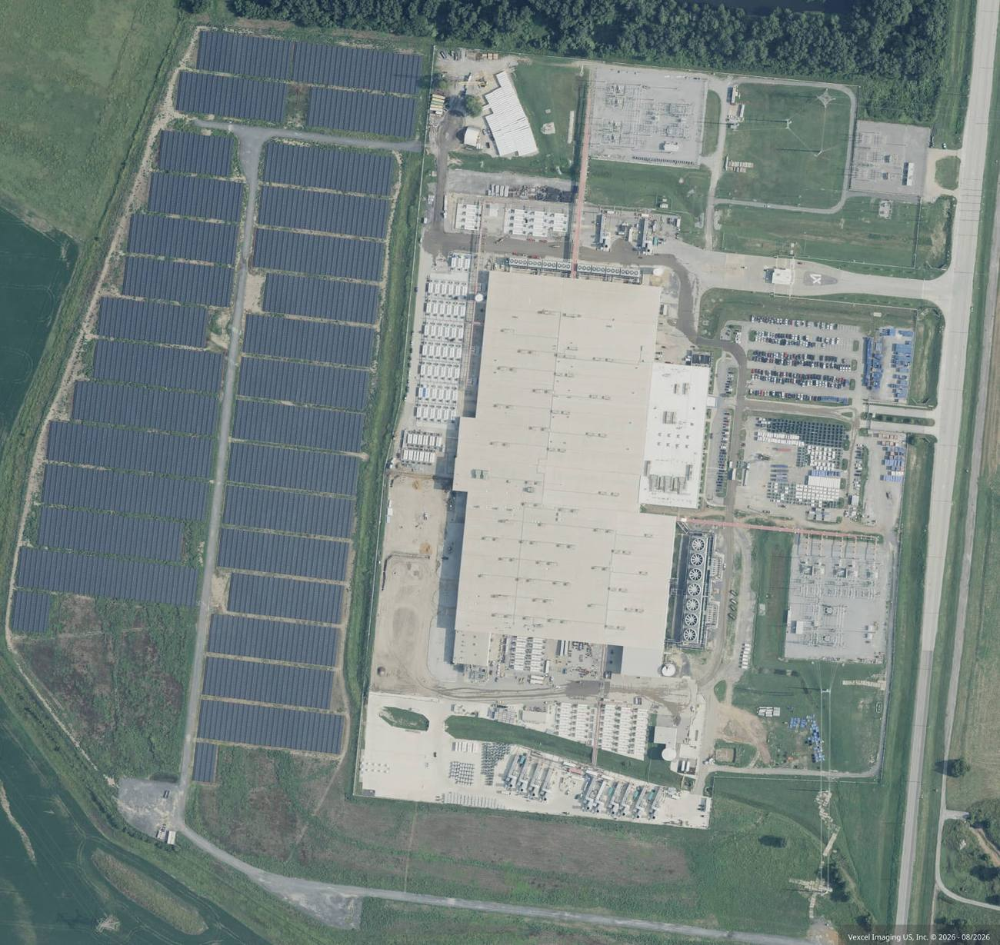
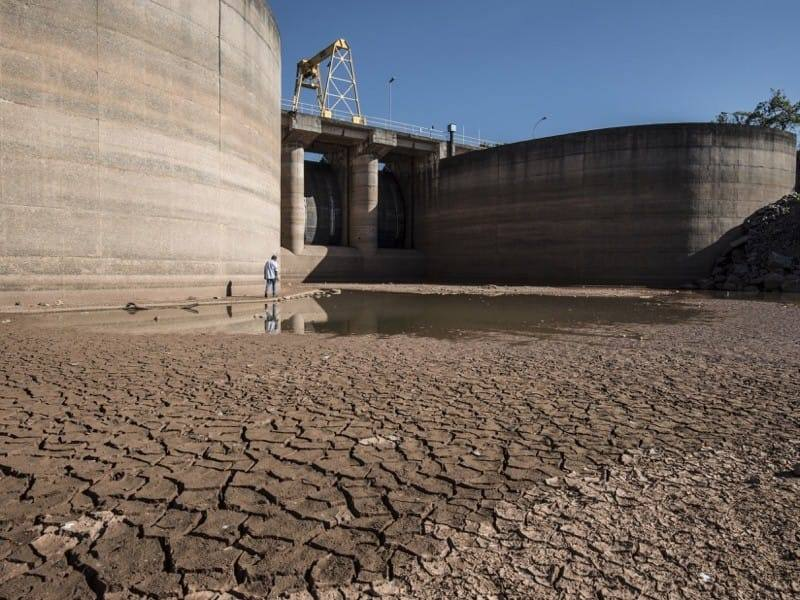

Recursos e infraestrutura
Água, eletricidade, terrenos, equipamentos eletrônicos, materiais de construção, redes de comunicação e trabalho humano.
GEOGRAFIA • TECNOLOGIA • MEIO AMBIENTE
Os serviços digitais conectam o mundo, mas dependem de água, eletricidade, terrenos, equipamentos e infraestrutura urbana. Este estudo investiga como a expansão dos data centers transforma o território e cria relações entre os fluxos globais de dados e os recursos locais da Macrometrópole Paulista.
EIXO CENTRAL DA INVESTIGAÇÃO
A chamada computação em nuvem parece acontecer em um espaço virtual. Na realidade, ela depende de edifícios, servidores, cabos, redes elétricas e sistemas de refrigeração. Quanto maior a demanda por processamento e inteligência artificial, maior pode ser a pressão sobre a infraestrutura que sustenta esses serviços.
Na Região Metropolitana de Campinas e na Grande São Paulo, os empreendimentos de Hortolândia, Sumaré e Barueri permitem investigar uma questão geográfica central: como conciliar a atração de investimentos tecnológicos com a disponibilidade de recursos naturais e a qualidade de vida das comunidades?

Quem recebe os benefícios da infraestrutura digital e quem assume os custos territoriais, ambientais e econômicos necessários para mantê-la funcionando?
01 • COMO O SISTEMA FUNCIONA
O esquema a seguir organiza os principais fluxos que precisam ser investigados. Ele é um modelo conceitual: não representa medições de uma instalação específica.
Água, eletricidade, terrenos, equipamentos eletrônicos, materiais de construção, redes de comunicação e trabalho humano.
Servidores armazenam e processam informações, executam aplicações, hospedam serviços e atendem solicitações de usuários.
Serviços digitais, investimentos, empregos e tributos; também calor, consumo de recursos, resíduos e possíveis pressões sobre a infraestrutura local.
Para cada entrada ou saída, procure um indicador verificável: metros cúbicos de água consumidos, energia utilizada, área ocupada, número de empregos, arrecadação municipal ou medidas de mitigação ambiental. Quando um dado não estiver disponível, registre a lacuna em vez de estimar um valor sem base.
CENTRALIDADE TERRITORIAL
A Macrometrópole Paulista reúne mercados consumidores, infraestrutura de telecomunicações, redes de energia, atividades econômicas e conexões com outros centros urbanos. Esses fatores podem tornar a região atrativa para a instalação de infraestrutura digital.
A localização de um data center, entretanto, não depende apenas da proximidade com clientes. A disponibilidade de energia, as condições de conexão, o custo do terreno, o planejamento urbano e a oferta de água também podem influenciar as decisões.

A Microsoft divulga projetos de data centers voltados a serviços de nuvem e inteligência artificial na região. Em Hortolândia, os registros públicos da empresa identificam instalações no eixo da Avenida Thereza Anna Cecon Breda e da Estrada Municipal Pedrina Guilherme.
As atualizações de obras da empresa permitem acompanhar o cronograma de implantação e as atividades anunciadas para os locais.
Fonte primária: atualização do projeto Noroeste de Hortolândia ↗
Fonte primária: atualização do projeto Sudoeste de Hortolândia ↗
Fonte primária: atualização do projeto de Sumaré ↗
O campus Tamboré, em Barueri, integra a expansão da infraestrutura de data centers da Scala. A empresa publica informações sobre instalações em operação, projetos planejados e subestações de energia.
Segundo a página institucional consultada, duas subestações de 60 MW cada são indicadas como em operação no campus, enquanto outra instalação é listada como em construção, com capacidade de TI anunciada de 560 MW. Esses números descrevem capacidades publicadas pela empresa, não o consumo elétrico contínuo medido de todo o campus.
Fonte primária: instalações e subestações da Scala ↗
Quais características de Hortolândia, Sumaré e Barueri ajudam a explicar a escolha desses locais? Quais dados seriam necessários para testar essa hipótese?
USO DO SOLO E URBANIZAÇÃO
A implantação de um data center pode envolver terraplenagem, fundações, grandes edifícios, pavimentação, áreas de estacionamento, equipamentos de refrigeração e infraestrutura elétrica. A extensão e a intensidade dessas mudanças dependem do terreno e do projeto.

A substituição de superfícies vegetadas por edifícios e pavimentos pode alterar a infiltração da água da chuva, o escoamento superficial e as condições térmicas locais. Esses efeitos devem ser avaliados a partir das características do terreno, do projeto e das medidas de drenagem.
Subestações, geradores de emergência e redes elétricas também fazem parte da infraestrutura de apoio. A presença e a dimensão de cada elemento precisam ser verificadas em documentos ou registros da instalação estudada.
RECURSOS HÍDRICOS
Os servidores liberam calor durante o funcionamento. Alguns data centers utilizam sistemas de refrigeração evaporativa, nos quais a evaporação da água ajuda a retirar calor do ambiente. Outras tecnologias utilizam diferentes combinações de ar, circuitos de líquido e equipamentos de rejeição de calor.

No caso dos projetos da Microsoft em Hortolândia e Sumaré, o tipo de refrigeração e a frequência de utilização de sistemas evaporativos se tornaram parte de um debate público sobre a relação entre a infraestrutura de inteligência artificial e a disponibilidade hídrica regional.
Uma reportagem da Folha de S.Paulo, publicada em março de 2026, abordou o consumo de água associado à tecnologia de resfriamento desses empreendimentos. A estimativa de até 3,24 milhões de litros por dia mencionada no debate deve ser tratada com cuidado: antes de atribuí-la a uma instalação específica, é necessário conferir a metodologia, as condições consideradas e se o número representa consumo real, demanda projetada ou um cenário de operação.
Reportagem: Microsoft, refrigeração e consumo de água ↗
Análise setorial: utilização de água nos data centers ↗
Hortolândia e Sumaré estão inseridas na região de influência das bacias dos rios Piracicaba, Capivari e Jundiaí (PCJ). A avaliação de um empreendimento deve considerar a disponibilidade de água, os usos concorrentes, as condições de estiagem e a infraestrutura de abastecimento.
A questão geográfica não é apenas saber quanta água um empreendimento utiliza, mas também de qual sistema de abastecimento ela vem, em que períodos é demandada e quais outros usuários dependem do mesmo recurso.
O fornecimento de água para grandes instalações também envolve decisões sobre a origem do recurso e as redes de abastecimento disponíveis. O uso de água de reuso, quando tecnicamente adequado, pode reduzir a dependência de água potável em determinadas aplicações.
Entretanto, a existência de um acordo, anúncio ou projeto não comprova, por si só, que todo o consumo já seja atendido por água de reuso. Para avaliar o resultado, é necessário verificar a implantação, a qualidade exigida para cada uso e os volumes efetivamente fornecidos.
INFRAESTRUTURA ELÉTRICA
Os data centers precisam manter servidores, equipamentos de rede e sistemas de suporte em funcionamento. A expansão de instalações de grande porte pode exigir novas conexões elétricas, subestações e investimentos na infraestrutura de transmissão e distribuição.

No campus Tamboré, a Scala divulga informações sobre subestações existentes e projetos de expansão. Esses dados ajudam a compreender a escala da infraestrutura necessária, mas não devem ser confundidos com o consumo real em cada hora do dia.
Empresas podem contratar eletricidade de fontes renováveis por meio de diferentes mecanismos comerciais. Esses contratos e certificados são relevantes para analisar compromissos climáticos, mas não demonstram, isoladamente, que toda a energia consumida por uma instalação seja entregue fisicamente por uma usina específica em cada momento.
Para avaliar os efeitos sobre a rede elétrica, é necessário considerar a demanda adicional, a localização da geração, a capacidade de transmissão, os investimentos necessários e as regras de financiamento desses investimentos.
DESENVOLVIMENTO ECONÔMICO
Grandes obras podem mobilizar empresas de construção, fornecedores, serviços de engenharia e trabalhadores. A operação também demanda profissionais especializados em tecnologia, manutenção, segurança e gestão.
Entretanto, a quantidade de empregos gerados durante a construção não corresponde necessariamente ao número de postos de trabalho permanentes após a inauguração. Para avaliar os efeitos locais, é necessário separar as etapas de implantação e operação.
Obras civis, montagem, instalações elétricas, sistemas de refrigeração e serviços contratados. A duração e o número de empregos precisam ser verificados para cada projeto.
Monitoramento de servidores, manutenção, segurança, gestão de energia e suporte técnico. A automação pode reduzir a necessidade de pessoal em relação à escala física da instalação.
Investigar arrecadação tributária, contratos locais, qualificação profissional e investimentos públicos associados ao empreendimento.
A atração de empreendimentos também envolve decisões sobre incentivos econômicos e tributários. Para avaliar seus resultados, é necessário comparar os benefícios concedidos com os investimentos realizados, os empregos gerados, a arrecadação efetiva e as obrigações assumidas.
Em setembro de 2026, a Lei nº 15.504 instituiu o regime tributário Redata para serviços de data center. A análise das suas exigências deve utilizar o texto legal e a regulamentação aplicável, sem presumir que todo projeto recebe automaticamente os mesmos benefícios.
Fonte oficial: Lei nº 15.504/2026 — Redata ↗
Como um município pode avaliar se os benefícios econômicos de um empreendimento são compatíveis com a infraestrutura exigida e com os recursos públicos utilizados?
REGULAÇÃO E FISCALIZAÇÃO
O licenciamento ambiental é um instrumento de avaliação dos impactos de determinados empreendimentos. Conforme o caso, a análise pode envolver recursos hídricos, consumo de energia, emissões, ruído, uso do solo e medidas de prevenção, mitigação e monitoramento.
Em 20 de abril de 2026, o Ministério Público de Contas do Estado de São Paulo publicou uma notícia sobre uma representação relativa aos processos de licenciamento de data centers da Microsoft em Hortolândia e Sumaré. O documento apontou possíveis irregularidades e solicitou a análise dos procedimentos relacionados aos projetos.
A representação é um documento relevante para compreender o debate regulatório, mas precisa ser lida como uma manifestação que apresenta questionamentos. Ela não deve ser descrita como uma decisão definitiva que comprovou todas as irregularidades apontadas.
Notícia oficial do MPC-SP sobre a representação ↗
Documento original: representação do MPC-SP (PDF) ↗
COMPROMISSOS E RESULTADOS
Empresas podem anunciar contratos de energia renovável, tecnologias de refrigeração, metas de eficiência e iniciativas de reuso de água. Essas medidas precisam ser analisadas de acordo com seu alcance, prazo, forma de medição e resultados efetivamente publicados.

Verificar a origem da eletricidade contratada, os certificados utilizados, a demanda efetiva e as medidas de eficiência energética.
Procurar dados de consumo, origem da água, tecnologia de refrigeração, metas de eficiência e volumes efetivamente reutilizados.
Verificar medidas de drenagem, ruído, uso do solo, proteção de áreas sensíveis e acompanhamento dos impactos sobre a vizinhança.
A eficiência do uso da água, conhecida pela sigla WUE (Water Usage Effectiveness), é um indicador utilizado para relacionar o uso de água à energia consumida pela infraestrutura de tecnologia da informação. Sua interpretação depende da metodologia, dos limites considerados e dos dados utilizados.
Um valor de referência não deve ser tratado como prova de sustentabilidade por si só. Também é necessário investigar a disponibilidade hídrica local, a origem da água e a quantidade total consumida.
Não. Uma meta, um contrato ou um projeto demonstra uma intenção ou compromisso. Para avaliar o resultado, procure relatórios de desempenho, dados medidos, prazos cumpridos e verificações independentes, quando disponíveis.
SÍNTESE GEOGRÁFICA
Os casos analisados mostram que a infraestrutura digital faz parte do espaço geográfico e depende de recursos materiais. A expansão de data centers pode atrair investimentos e ampliar serviços, mas também cria demandas por água, energia, terrenos e infraestrutura urbana.
A análise crítica não exige concluir antecipadamente que todos os projetos são benéficos ou prejudiciais. Ela exige comparar os benefícios anunciados, os custos documentados, as condições locais e a distribuição dos resultados entre empresas, poder público e população.
O desafio central é entender como os benefícios da economia digital podem ser conciliados com a disponibilidade de recursos naturais, a capacidade da infraestrutura pública e os direitos das comunidades locais. Essa avaliação exige transparência, planejamento territorial e dados verificáveis.
ATIVIDADE DE PESQUISA
Utilize os casos da Microsoft e da Scala para elaborar uma comparação geográfica. Preencha cada item com informações documentadas. Quando não encontrar dados suficientes, registre o que ainda precisa ser investigado.
Identifique o município, o terreno, as vias de acesso e a infraestrutura existente. Procure mapas e imagens históricas.
Organize dados sobre água, energia, empregos, investimentos e mudanças na paisagem. Informe a fonte e o período de cada número.
Compare compromissos ambientais com resultados documentados e formule uma conclusão baseada nas evidências encontradas.
Quais condições deveriam ser exigidas de um grande empreendimento digital para que seus benefícios econômicos fossem compatíveis com a proteção dos recursos naturais e o bem-estar da população local?
REFERÊNCIAS E FONTES PRIMÁRIAS
As referências abaixo permitem consultar anúncios de projetos, documentos institucionais, reportagens e legislação. As fontes possuem finalidades diferentes: documentos empresariais descrevem os projetos e compromissos das empresas, enquanto reportagens e documentos de fiscalização ajudam a compreender os questionamentos públicos.
Atualização oficial sobre a construção do data center Noroeste, com localização e informações sobre as obras.
Consultar a fonte ↗Informações oficiais sobre a construção do projeto localizado na Estrada Municipal Pedrina Guilherme.
Consultar a fonte ↗Relação institucional de data centers, instalações planejadas e subestações elétricas.
Consultar a fonte ↗Notícia sobre a representação relativa aos processos de licenciamento em Hortolândia e Sumaré.
Consultar a fonte ↗Documento original que apresenta os questionamentos relacionados aos projetos de data centers no interior paulista.
Ler o documento PDF ↗Reportagem sobre o sistema de resfriamento utilizado nos projetos da Microsoft e o debate sobre consumo de água.
Ler a reportagem ↗Reportagem sobre iniciativas de uso de água de reuso para atender data centers.
Ler a reportagem ↗Texto oficial da Lei nº 15.504/2026, que institui o regime tributário para serviços de data center.
Ler a lei no Planalto ↗